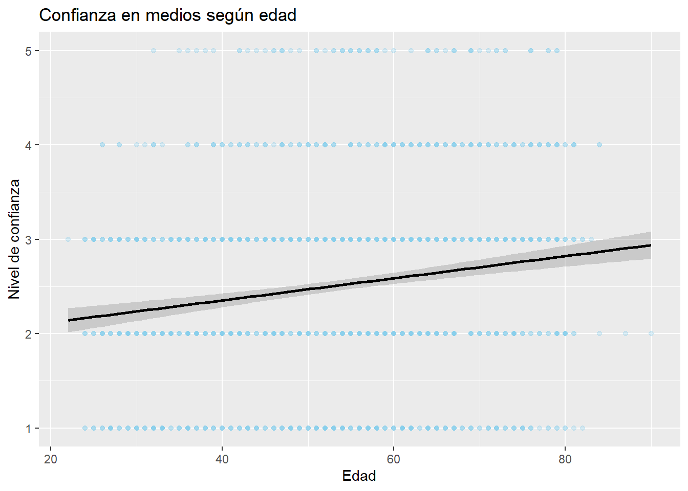

El presente trabajo aborda el objetivo del trabajo 1, que se enfoca en la confianza en los medios de comunicación en Chile, en un contexto marcado por una creciente desconfianza hacia las instituciones. A partir de la base de datos ELSOC 2022, se busca analizar cómo varía esta confianza según características sociodemográficas como la edad, el sexo y el nivel educacional. En particular, se plantea como hipótesis que a mayor nivel educacional, menor sería la confianza en los medios. De este modo, el objetivo es realizar un análisis descriptivo que permita aproximarse empíricamente a este fenómeno respondiendo a la pregunta de investigación ¿Cómo varía la confianza en los medios de comunicación en Chile según la edad, el sexo y el nivel educacional?.
Variables
Edad
La variable edad corresponde a un nivel de medición de intervalo/razón, ya que se expresa en valores numéricos continuos. En la base de datos aparece como edad y en la encuesta refiere a la edad del encuestado en años. Esta variable representa la dimensión generacional del fenómeno, permitiendo observar cómo distintos grupos etarios se posicionan frente a los medios de comunicación. Su utilidad radica en identificar posibles diferencias en la confianza en los medios según la edad de los individuos.
Sexo
La variable sexo corresponde a un nivel de medición nominal, ya que clasifica a los individuos en categorías sin orden. En la base de datos se encuentra como sexo y en la encuesta distingue entre hombre y mujer. Esta variable representa una característica sociodemográfica básica que permite analizar diferencias entre grupos. Su utilidad es comparar los niveles de confianza en los medios según el sexo de los encuestados.
Nivel educacional
La variable nivel educacional corresponde a un nivel de medición ordinal, dado que presenta categorías con un orden jerárquico. En la base de datos aparece como nivel_educ y en la encuesta refiere al nivel de estudios alcanzado por el encuestado. Esta variable representa el capital educativo de los individuos, siendo relevante para analizar cómo la formación influye en la percepción de los medios. Su utilidad es identificar patrones de confianza en función del nivel educacional.
Confianza en los medios de comunicación (conf_medios)
La variable confianza en los medios de comunicación corresponde a un nivel de medición ordinal, ya que expresa distintos grados de confianza. En la base de datos se identifica como conf_medios y en la encuesta refiere al nivel de confianza que tienen los encuestados en los medios de comunicación. Esta variable representa directamente el fenómeno de interés del estudio y corresponde a la variable dependiente. Su utilidad es describir y analizar los niveles de confianza en los medios en la población.
Construcción de un índice de confianza en medios
Para la construcción del índice de confianza institucional, se consideran las variables de confianza en el gobierno, los partidos políticos, el congreso y los medios de comunicación, ya que permiten captar distintas dimensiones de un mismo fenómeno. A partir de sus estadísticos descriptivos, se observa que, en general, los niveles de confianza tienden a concentrarse en categorías bajas y medias, evidenciando una percepción crítica hacia las instituciones. En particular, la confianza en los partidos políticos y el congreso presenta niveles más bajos en comparación con otras instituciones, mientras que la confianza en los medios y el gobierno muestra una distribución levemente más equilibrada. Estos resultados permiten aproximarse al fenómeno de la confianza institucional, aunque en esta etapa las variables se analizan de manera individual, dejando la construcción del índice para una fase posterior.
library(haven)
Warning: package 'haven' was built under R version 4.5.3
library(dplyr)
Warning: package 'dplyr' was built under R version 4.5.3
Adjuntando el paquete: 'dplyr'
The following objects are masked from 'package:stats':
filter, lag
The following objects are masked from 'package:base':
intersect, setdiff, setequal, union
library(ggplot2)
Warning: package 'ggplot2' was built under R version 4.5.3
data <-read_dta("C:/Users/trini/OneDrive/Escritorio/Trabajo_R_OPT/input/ELSOC_2022.dta")names(data)
#Gráfico de confianza en medios según edadggplot(data = data[!is.na(data$conf_medios), ],aes(x = edad, y = conf_medios)) +geom_point(alpha =0.3, color ="skyblue") +geom_smooth(method ="lm", color ="black") +labs(title ="Confianza en medios según edad",x ="Edad",y ="Nivel de confianza")
`geom_smooth()` using formula = 'y ~ x'

# Gráfico de barras en confianza en medios según nivel educacionalggplot(data = data[!is.na(data$conf_medios) &!is.na(data$nivel_educ), ],aes(x = nivel_educ,fill =factor(conf_medios))) +geom_bar(position ="dodge") +labs(title ="Niveles de confianza en medios según nivel educacional",x ="Nivel educacional",y ="Cantidad de personas",fill ="Confianza") +scale_fill_brewer(palette ="Blues") +theme_minimal()